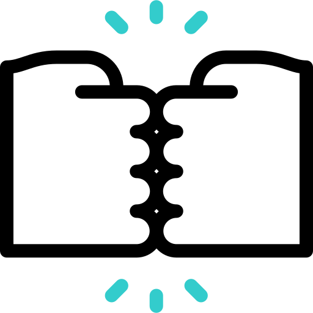
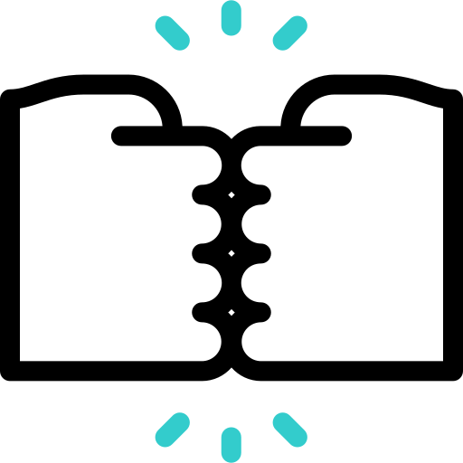

O que é essa profissão?


Um desenvolvedor web é responsável por criar e manter sites e aplicativos web...utilizando linguagens de programação como HTML, CSS, JavaScript e outras tecnologias relacionadas. Ele também pode trabalhar em áreas como UX/UI design, banco de dados e segurança web.
Que tipo de curso fazer?

O desenvolvedor web pode fazer cursos específicos de programação, como HTML, CSS e JavaScript...ou cursos mais abrangentes, como ciência da computação, engenharia de software, Sistemas de informação e etc.
Por que escolher essa profissão?
.gif)
Ser um desenvolvedor web oferece oportunidades de criar e moldar a experiência online das pessoas....Além de ser uma área de grande procura por profissionais e pouca disponibilidade de desenvolvedores no mercado faz com que essa seja uma área extremamente promissora para aqueles que investirem em conhecimento e atualização.
Como ser um desenvolvedor web?

Para se tornar um desenvolvedor web, é recomendado estudar linguagens de programação como HTML, CSS e JavaScript...além de ter conhecimentos em design e experiência do usuário. Há muitos cursos online e presenciais que podem ajudar a adquirir essas habilidades.
Quanto tempo de curso um desenvolvedor web faz?


A duração do curso para se tornar um desenvolvedor web pode variar...geralmente entre alguns meses a alguns anos, dependendo do tipo de curso e da dedicação do aluno.
Quem pode me ajudar a chegar nessa profissão?
 

Um desenvolvedor web pode receber ajuda de colegas de trabalho... comunidades online de desenvolvedores, fóruns de programação e tutoriais disponíveis na internet.